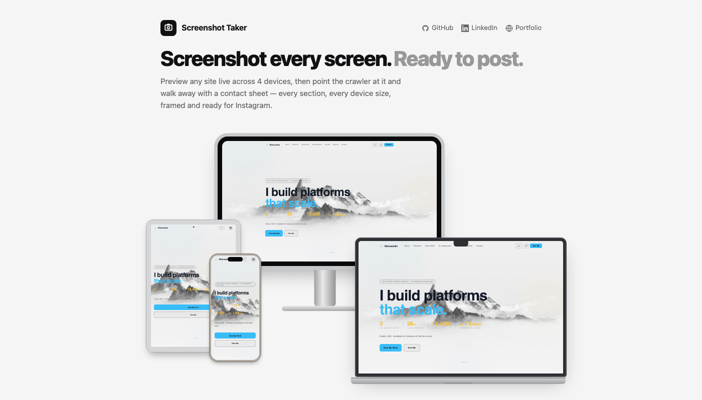

Point it at a website — a live URL or a local project folder. It crawls every page, screenshots every section at four real device sizes, and builds one composite hero mockup per section: desktop, laptop, tablet and phone, overlapped and styled after current Apple hardware. No more resizing a browser window and cropping screenshots by hand.

Paste a URL and see it live across all four device sizes at once, before you capture anything. Every frame scrolls on its own and every frame follows a link click to the same page — it's the closest thing to standing in front of the real site at every screen size simultaneously.
Studio Display, MacBook Pro, iPad Pro and iPhone — modelled to the actual hardware, not a rough approximation.
Park the phone on one section while you inspect another on the desktop view — nothing is locked together.
Consent overlays are hidden before every capture — never clicked, never consented to on your behalf.
Give it a homepage URL — or the path to a local project folder — and it follows every same-domain link to find every page. Localized sites, templated listing pages and linked PDFs are all handled: real pages are kept, near-duplicates and non-page files are filtered out automatically.
Same-domain links are crawled automatically, including behind a locale prefix like /en or /en-US.
Point it at a folder with an index.html and it's served automatically — no live URL required.
Linked PDFs, images and broken links never make it into the crawl. Only real pages get captured.
Every page is developed at four viewports — desktop, laptop, tablet and mobile — with sections auto-detected from the page's own structure, or captured full-page, or targeted with your own CSS selectors. Near-blank captures caught mid-animation are retried automatically.
Reads the page's real structure — including framework wrappers like <main> — to find each actual content block.
1920 / 1440 / 768 / 390px — the exact widths of a Studio Display, MacBook Pro, iPad Pro and iPhone.
A capture caught mid-transition or mid-hydration is detected and re-shot automatically.
Every section becomes one composite hero image — all four devices overlapped in a single frame — plus a left/right split ready to post as a two-slide carousel. Captions are generated per section, varied enough that a hundred-post run doesn't read as the same post copied a hundred times.
Free, open source, and runs entirely on your own machine — nothing leaves your Mac except the posts you choose to publish.